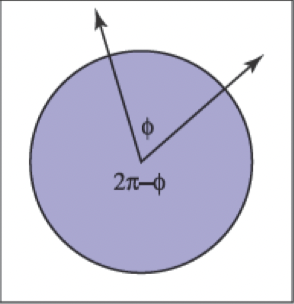
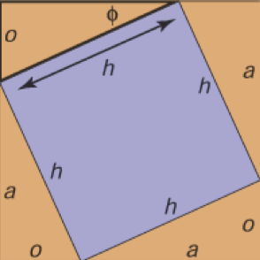
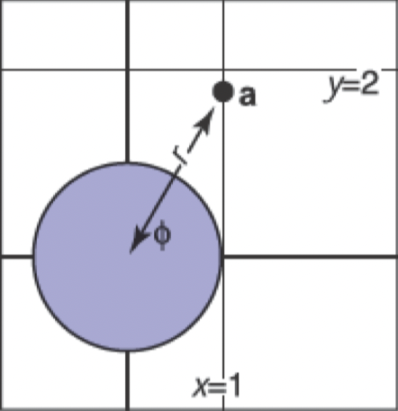
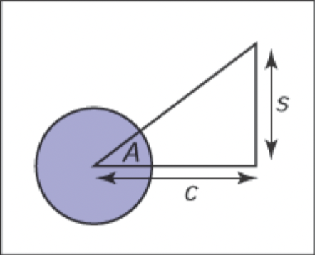
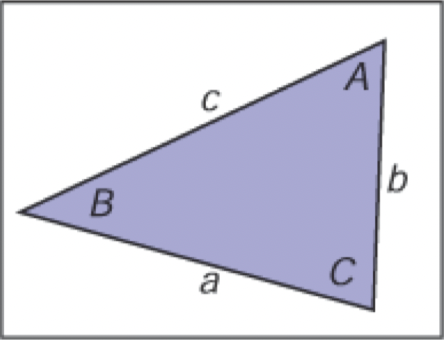

三角函数
在图形学中，我们在许多情况下使用基本三角函数。通常情况下，它不怎么花哨，但是经常有助于记住基本定义。
角度
尽管我们认为角度是理所当然的，但我们应该回到它们的定义，以便我们可以将角度的概念延伸到球体上。角度是在两条半线（从原点出发的无限射线）或方向之间形成的，并且必须用一些约定来决定它们之间产生的角度的两种可能性，如图2.6所示。角度是由它在单位圆上切出的弧段的长度来定义的。一个常见的约定是使用较小的弧长，角的符号由指定两条半线的顺序来决定。使用该约定，所有角度都在 \([-\pi, \pi]\) 范围内。

图2.6：两条半线将单位圆切割成两条弧。任意一条弧线的长度都是这两条半线“之间”的有效角度。我们可以使用较小长度是角度的约定，或者两条半线按一定顺序指定，确定角度 \(\phi\) 的弧是从第一条半线到第二条半线逆时针扫过的弧。
这些角度中的每一个都是被两个方向“切割”的单位圆的弧长。因为单位圆的边缘是 \(2\pi\)，所以两个可能的角度总和为 \(2\pi\)。这些弧长的单位是弧度。另一个常见的单位是度数，圆的周长是 \(360^\circ\)。因此，一个弧度为 \(\pi\) 的角的度度是 \(180^\circ\)，通常表示为 \(180^\circ\)。度数和弧度之间的转换是
\[ Degrees =\frac{180}{\pi} radians;\\ Radians =\frac{\pi}{180} degrees. \]
三角函数
给出一个边长为 \(a\)、\(o\)、\(h\) 的直角三角形，其中 \(h\) 是最长边的长度（总是与直角相对），或叫斜边，勾股定理描述了一种重要的关系：
\[ a^2+o^2=h^2 \]
你可以从图2.7中看到这一点，大正方形的面积为 \((a+o)^2\)，四个三角形的面积合计为 \(2a0\)，中心正方形的面积为 \(h^2\)。

图2.7：勾股定理的几何证明。
由于三角形和内部方块均匀地细分了较大的正方形，所以我们可以很容易地取得如下形式 \(2ao+h^2=(a+o)^2\)。我们定义了 \(\phi\)，以及其他基于比值的三角表达式：
\[ \begin{aligned} \sin \phi & \equiv o / h \\ \csc \phi & \equiv h / o \\ \cos \phi & \equiv a / h \\ \sec \phi & \equiv h / a \\ \tan \phi & \equiv o / a \\ \cot \phi & \equiv a / o \end{aligned} \]
这些定义允许我们建立极坐标，其中一个点被编码为与原点的距离与 \(x\) 正半轴带符号的角度（图2.8）。请注意，角度的范围是 \(\phi\in(-\pi,\pi]\)，正数角是从 \(x\) 轴正半轴逆时针方向旋转取得的。逆时针方向映射到正数的这个约定是任意的，但它被应用于图形学很多场景中，因此值得将其记忆。

图2.8：点 \((x_a,y_a)\) 的极坐标为 \((r_a,\phi_a)=(2,\frac{\pi}{3})\)。
三角函数是周期性的，可以接受任何角度作为参数。例如，\(\sin(A) = \sin(A + 2\pi)\)。这意味着当与 \(\mathbb{R}\) 域考虑时，这些函数是不可逆的。这个问题可以通过限制标准反函数的范围来避免。这在几乎所有现代数学库中都是以标准方式进行的（例如，Plauger（1991））。域和范围是
\[ \begin{equation} \begin{aligned} &\operatorname{asin}:[-1,1] \mapsto[-\pi / 2, \pi / 2] \\ &\operatorname{acos}:[-1,1] \mapsto[0, \pi] \\ &\operatorname{atan}: \mathbb{R} \mapsto[-\pi / 2, \pi / 2] \\ &\operatorname{atan} 2: \mathbb{R}^{2} \mapsto[-\pi, \pi] \end{aligned} \end{equation} \]
最后一个函数 \(\operatorname{atan} 2(s,c)\) 通常非常有用。它采用与 \(\sin A\) 成比例的 \(s\) 值以及与 \(\cos A\) 成比例的 \(c\) 值，两者具有相同的因子，最后返回 \(A\)。假定因子为正数。一种看法是它返回了二维笛卡尔点 \((c,s)\) 在极坐标中的角度（图2.9）。

图2.9：函数 \(\operatorname{atan} 2(s,c)\) 返回 \(A\) 的角度，这通常在图形学中非常有用。
有用的恒等式
本节未经推导列出了各种有用的三角恒等式。
转换恒等式：
\[ \begin{aligned} \sin (-A) &=-\sin A \\ \cos (-A) &=\cos A \\ \tan (-A) &=-\tan A \\ \sin (\pi / 2-A) &=\cos A \\ \cos (\pi / 2-A) &=\sin A \\ \tan (\pi / 2-A) &=\cot A \end{aligned} \]
毕达哥拉斯恒等式：
\[ \begin{array}{r} \sin ^{2} A+\cos ^{2} A=1 \\ \sec ^{2} A-\tan ^{2} A=1 \\ \csc ^{2} A-\cot ^{2} A=1 \end{array} \]
加减法恒等式：
\[ \begin{aligned} \sin (A+B) &=\sin A \cos B+\sin B \cos A \\ \sin (A-B) &=\sin A \cos B-\sin B \cos A \\ \sin (2 A) &=2 \sin A \cos A \\ \cos (A+B) &=\cos A \cos B-\sin A \sin B \\ \cos (A-B) &=\cos A \cos B+\sin A \sin B \\ \cos (2 A) &=\cos ^{2} A-\sin ^{2} A \end{aligned} \]
\[ \begin{aligned} \tan (A+B) &=\frac{\tan A+\tan _{B}}{1-\tan A \tan B} \\ \tan (A-B) &=\frac{\tan A-\tan B}{1+\tan A \tan B} \\ \tan (2 A) &=\frac{2 \tan A}{1-\tan A} \end{aligned} \]
半角恒等式：
\[ \begin{aligned} &\sin ^{2}(A / 2)=(1-\cos A) / 2 \\ &\cos ^{2}(A / 2)=(1+\cos A) / 2 \end{aligned} \]
乘法恒等式：
\[ \begin{aligned} &\sin A \sin B=-(\cos (A+B)-\cos (A-B)) / 2 \\ &\sin A \cos B=(\sin (A+B)+\sin (A-B)) / 2 \\ &\cos A \cos B=(\cos (A+B)+\cos (A-B)) / 2 \end{aligned} \]
以下恒等式适用于边长为 \(a\)、\(b\) 和 \(c\) 的任意三角形，每边相对的角度分别为 A、B、C（图 2.10），

图2.10：几何的三角定律。
\[ \begin{aligned} \frac{\sin A}{a}=\frac{\sin B}{b}=\frac{\sin C}{c}\quad &\mbox{（正弦定理）}\\ c^{2}=a^{2}+b^{2}-2 a b \cos C\quad &\mbox{（余弦定律）}\\ \frac{a+b}{a-b}=\frac{\tan \left(\frac{A+B}{2}\right)}{\tan \left(\frac{A-B}{2}\right)}\quad &\mbox{（切线定律）} \end{aligned} \]
三角形的面积也可以根据这些边长计算：
\[ \text { Triangle area }=\frac{1}{4} \sqrt{(a+b+c)(-a+b+c)(a-b+c)(a+b-c)} . \]